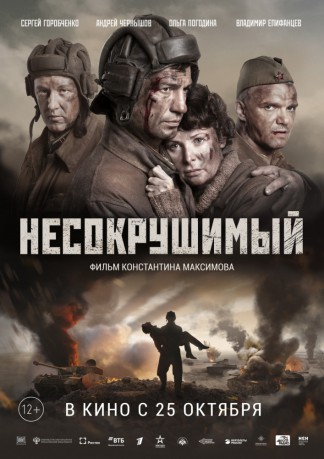

#10747 Unzerstörbar - Die Panzerschlacht von Rostow
 
 IMDB-Wertung: 6.2 / 10
IMDB-Wertung: 6.2 / 10  Metascore: 0
Metascore: 0 
The movie inspired by real events tells the story of the KV-1 tank's crew heroic deed. Having a losing fight, the crew of Semyon Konovalov destroyed 16 enemy tanks, 2 armored vehicles and 8 vehicles with enemy personnel near Nizhnemityakin farm in Tarasovskoye district of Rostov region. This is the story of not the poster heroes, but broken, cheerful, and very diverse guys who just wanted to live. At the decisive moment they managed to do the only right thing and performed the deed worthy of the legend.
Jahr: 2018
Dauer: 89 Minuten
FSK:
Land: Russland Studio: MosfimTonspuren: DTS - ,
Untertitel: Deutsch,
Auflösung: 1080p (1920x808) Größe: 8581 MB
Genre: Action, Drama, Krieg, Geschichte
Regisseur: Konstantin Maksimov
Drehbuch: Valeriya Baykeeva, Valeriya Baykeeva, Konstantin Maksimov, Konstantin Mayer
Soundtrack: Oleg Volyando
Darsteller:
- Vladimir Epifantsev als Siitov
- Nikolay Dobrynin als Basich, legless surgeon
- Evgenii Zelenskii als Drozdov, tank commander
- Andrey Chernyshov als Semen Konovalov
- Oleg Fomin als Rykov
- Olga Pogodina als Paul's
- Sergey Gorobchenko als Krotov
- Vasiliy Sedykh als Shinkevich
- Vladimir Kochetkov als Gubkin
- Vladimir Yepifanov als
Datei: X:\2018(N-Z)\Unzerstörbar - Die Panzerschlacht von Rostow (2018, FSK, 1920x808).mkv seit 22.02.2019
Festplatte: HD 2018(G-Z)-2019(A-Z)
 Es gibt insgesamt 172 Filme in der Gruppe '2018(N-Z)'
Es gibt insgesamt 172 Filme in der Gruppe '2018(N-Z)'